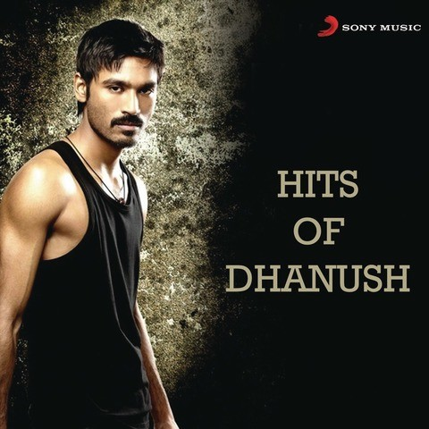
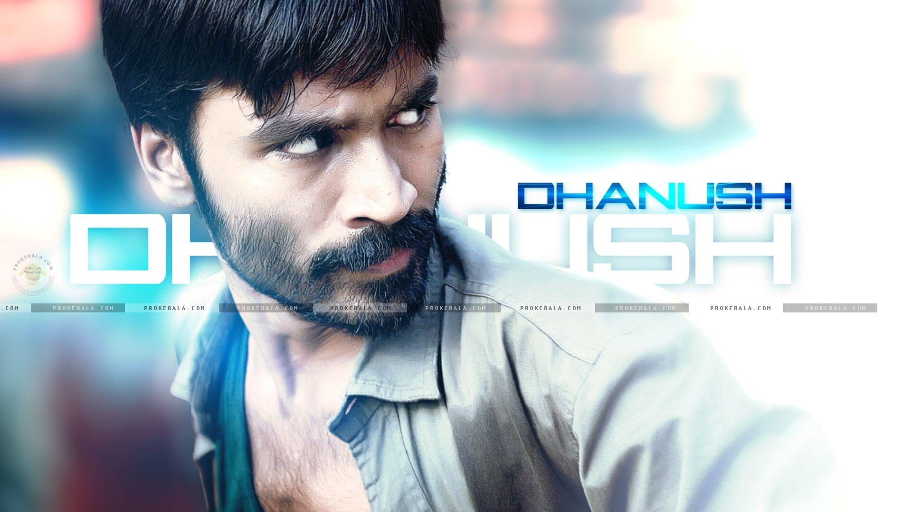
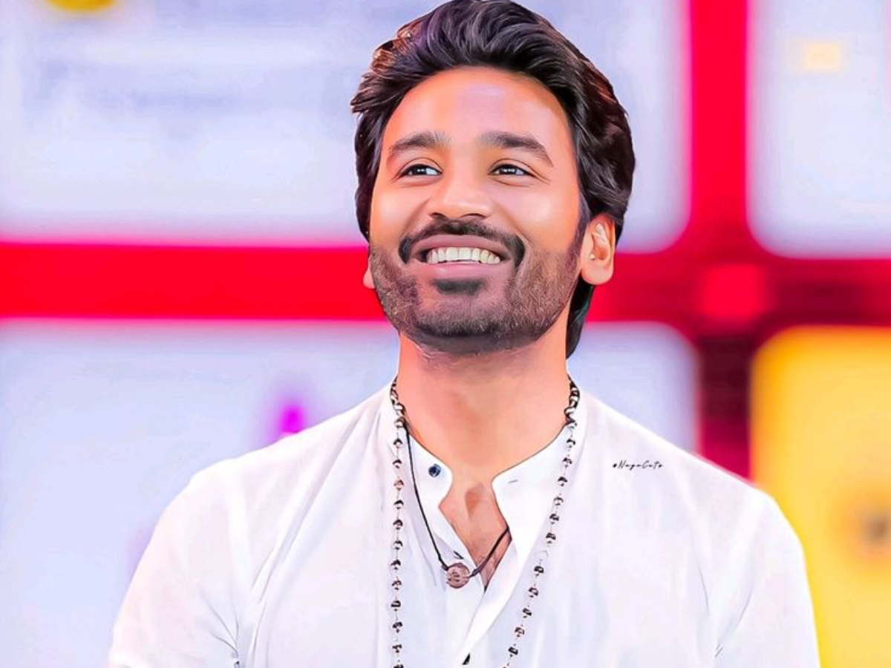

"Dhanush is a celebrated Indian actor, singer, and film producer known for his versatile performances in Tamil cinema. Rising to fame with his natural acting style, he has delivered memorable roles in films like Aadukalam, which won him a National Award, and Raanjhanaa, his Bollywood debut that earned widespread acclaim. Beyond acting, Dhanush is also a talented playback singer, with his viral hit Why This Kolaveri Di becoming a global sensation. His career reflects a blend of artistic depth and mass appeal, making him one of the most admired figures in contemporary Indian cinema.
three|maari|kutty
Thulluvadho Ilamai Film•2002 Starring as Mahesh Polladhavan| Film•2007 Starring as Prabhu Aadukalam| Film•2010 Starring as Karuppu Raanjhanaa Film•2013| Starring as Kundan Shankarin
Debut: Thulluvadho Ilamai (2002), directed by his father Kasthuri Raja. Breakthrough: Kadhal Kondein (2003), directed by his brother Selvaraghavan. National Award Wins: Aadukalam (2010) – Best Actor Asuran (2019) – Best Actor Bollywood Entry: Raanjhanaa (2013), earning the Filmfare Best Debut Award.
Playback Singing: Famous for Why This Kolaveri Di (2011), the first Indian song to cross 100M views on YouTube. Rowdy Baby: From Maari 2, became the first South Indian video song to hit 1 billion views. Recognized as both a lyricist and singer, winning Filmfare and SIIMA awards.
National Film Awards: 4 wins (acting + producing). Filmfare Awards South: 8 wins. SIIMA Awards: 14 wins. Forbes India Celebrity 100: Featured six times, among the highest-paid Tamil actors.
family: Son of director Kasthuri Raja; brother Selvaraghavan is a filmmaker. Marriage: Married Aishwarya Rajinikanth in 2004; divorced in 2024. Children: Two. Education: Initially wanted to study hotel management, but entered films under his brother’s guidance.